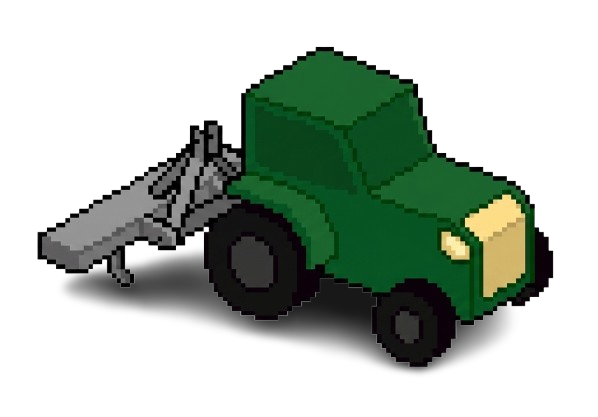

Movimentação: Use as teclas W A S D ou as Setas do Teclado para conduzir o veículo ativo.
Trator [U]: Tecla G muda o implemento. Grade ara a terra, Plantadeira semeia (consome sementes). Abasteça de sementes no Silo de Grãos (Norte) com a tecla V.
Colheitadeira [H]: Passe no milho maduro (Amarelo) para colher. Encoste o Camião Caçambeiro nela para o transbordo automático.
Camião Caçambeiro [K]: Tecla V vende o milho nos Silos (Norte). Com caçamba vazia, prima V na Fábrica de Ração (Norte) para comprar ração. Vá aos piquetes e prima V para encher os cochos (Super Engorda 4x).
Caminhão Boiadeiro [J]: Aproxime-se dos animais nos piquetes para acessar o embarque automático. Vá à área amarela do Frigorífico (Sul) e prima V para vender pelo preço baseado no peso.
